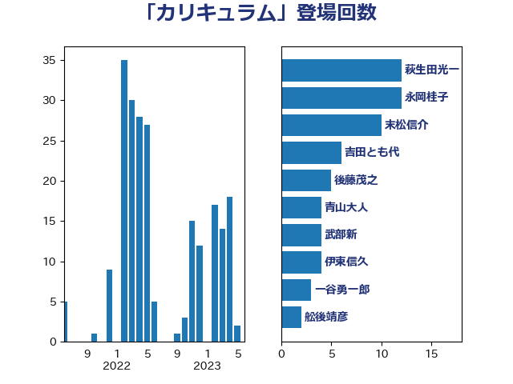

単語「カリキュラム」

| 萩生田光一 | 自由民主党 | 20 回 |
| 末松信介 | 自由民主党 | 10 回 |
| 吉田とも代 | 日本維新の会 | 6 回 |
| 後藤茂之 | 自由民主党 | 5 回 |
| 田村憲久 | 自由民主党 | 5 回 |
| 今井絵理子 | 自由民主党 | 4 回 |
| 伊東信久 | 日本維新の会 | 4 回 |
| 武部新 | 自由民主党 | 4 回 |
| 舩後靖彦 | れいわ新選組 | 4 回 |
| 青山大人 | 立憲民主党 | 4 回 |
| 梅村みずほ | 日本維新の会 | 3 回 |
| 梅村聡 | 日本維新の会 | 3 回 |
| 畦元将吾 | 自由民主党 | 3 回 |
| 上野通子 | 自由民主党 | 2 回 |
| 丹羽秀樹 | 自由民主党 | 2 回 |
| 伊波洋一 | 無所属 | 2 回 |
| 吉良よし子 | 日本共産党 | 2 回 |
| 塩川鉄也 | 日本共産党 | 2 回 |
| 小泉進次郎 | 自由民主党 | 2 回 |
| 川崎ひでと | 自由民主党 | 2 回 |
| 片山大介 | 日本維新の会 | 2 回 |
| 稲津久 | 公明党 | 2 回 |
| 西岡秀子 | 国民民主党 | 2 回 |
| 鰐淵洋子 | 公明党 | 2 回 |
| ながえ孝子 | 無所属 | 1 回 |
| 下条みつ | 立憲民主党 | 1 回 |
| 中野洋昌 | 公明党 | 1 回 |
| 仁木博文 | 無所属 | 1 回 |
| 伊佐進一 | 公明党 | 1 回 |
| 住吉寛紀 | 日本維新の会 | 1 回 |
| 古屋範子 | 公明党 | 1 回 |
| 吉田はるみ | 立憲民主党 | 1 回 |
| 土屋品子 | 自由民主党 | 1 回 |
| 坂本哲志 | 自由民主党 | 1 回 |
| 城井崇 | 立憲民主党 | 1 回 |
| 塩田博昭 | 公明党 | 1 回 |
| 大島敦 | 立憲民主党 | 1 回 |
| 大石あきこ | れいわ新選組 | 1 回 |
| 宮崎雅夫 | 自由民主党 | 1 回 |
| 山本左近 | 自由民主党 | 1 回 |
| 山谷えり子 | 自由民主党 | 1 回 |
| 打越さく良 | 立憲民主党 | 1 回 |
| 早稲田ゆき | 立憲民主党 | 1 回 |
| 有村治子 | 自由民主党 | 1 回 |
| 木原稔 | 自由民主党 | 1 回 |
| 柳ヶ瀬裕文 | 日本維新の会 | 1 回 |
| 江島潔 | 自由民主党 | 1 回 |
| 浜口誠 | 国民民主党 | 1 回 |
| 浜田聡 | NHK党 | 1 回 |
| 渡辺創 | 立憲民主党 | 1 回 |
| 熊野正士 | 公明党 | 1 回 |
| 片山さつき | 自由民主党 | 1 回 |
| 石川博崇 | 公明党 | 1 回 |
| 神田憲次 | 自由民主党 | 1 回 |
| 緑川貴士 | 立憲民主党 | 1 回 |
| 藤巻健太 | 日本維新の会 | 1 回 |
| 道下大樹 | 立憲民主党 | 1 回 |
| 野上浩太郎 | 自由民主党 | 1 回 |